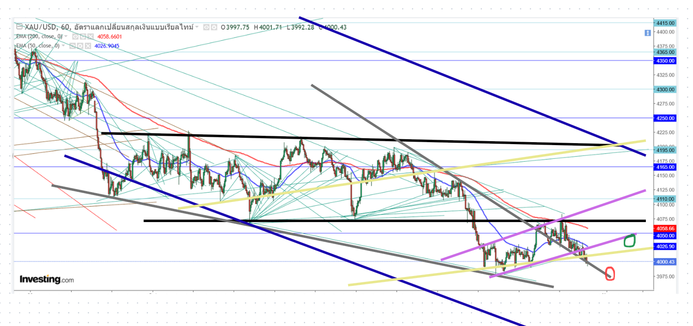

📈 ประเมินสถานการณ์ XAUUSD วันที่ 30/10/69 (อัปเดตล่าสุด):
ไทม์เฟรม เดย์ ยังเป็นขาขึ้น แต่กราฟอาจย่อลึกเพื่อขึ้นต่อ
แท่งแดง เนื้อเทียนตํ่ากว่าไส้เทียนแท่งก่อนหน้า หลุดแนวรับสำคัญ 4050 แล้วย่อตัวลง
(ยังไม่ปิดแท่ง) จุดที่น่าสนใจ
ระยะกลางยังไม่หลุด Falling Wedge (เส้นสีเทา) Symmetrical Triangle (เส้นสีนํ้าตาลอ่อน)
หลุด Sideway (เส้นสีดำ)ที่น่าสนใจ ใกล้เคียงFibo 78.6% อาจรับอยู่
ฟอร์มตัวเป็น Ascending Channels (สีเหลืองอ่อน)
Descending Channels (สีนํ้าเงิน) แล้วเริ่มย่อตัว
ระยะสั้นมีโอกาสย่อตัวไปที่ระหว่าง 3950-4120 (วงกลมสีแดง)

ภาพประกอบ: โครงสร้างแนวโน้มราคาทองคำ XAUUSD ประจำวัน
โซนยุทธศาสตร์หลัก
ไทม์เฟรม เฮชหนึ่ง กราฟกำลังฟอร์มตัวเป็น ฟอร์มตัวเป็น Ascending Channels (สีเหลือง สีม่วงอ่อน) Sideway (สีดำ) Falling Wedge (เส้นสีเทา) ถ้าไม่หลุดมีโอกาส ยกตัวไปที่ ขอบบน Ascending Channels (สีม่วงอ่อน) 4065 วงกลมเขียว ย่อตัวไปที่ ขอบบน Falling Wedge (เส้นสีเทา) 3975 วงกลมแดง

ภาพประกอบ: โครงสร้างแนวโน้มราคาทองคำ XAUUSD ประจำวัน
⚠️ จุดเสี่ยงและเป้าหมายระยะสั้น:
อย่างไรก็ตาม หากเกิดปัจจัยกดดันทางเศรษฐกิจหรือมีแรงเทขายทำกำไรออกมาหนัก จนทำให้ราคาหลุดแนวรับจิตวิทยาที่ระดับ 4230 ลงมา นักลงทุนอาจต้องชะลอการเข้าสถานะ แล้วถอยมาตั้งรับรอดูสถานการณ์โครงสร้างราคาที่ระดับสัดส่วน Fibonacci ถัดไปทางด้านล่างแทนครับ
กลยุทธ์ตามกรอบราคาประจำวัน
- 🎯 เป้าหมายขาขึ้น: มีลุ้นรีบาวด์สปีดตัวขึ้นไปทดสอบเป้าหมายระยะสั้นที่โซน 4280 - 4300
- 💡 คำแนะนำหน้างาน: รอสัญญาณกลับตัวที่แนวรับเพื่อหาจังหวะ Buy สั้นๆ เล่นในกรอบ
- 📌 กรอบแนวรับสำคัญ: 3975 และ 4065
- 📌 กรอบแนวต้านสำคัญ: 4280 และ 4350
🔔 ข้อควรระวัง: ตลาดช่วงนี้มีความผันผวนสูง ควรวางแผนบริหารความเสี่ยง (MM) อย่างเคร่งครัดนะครับ
💬 เพื่อน ๆ เทรดเดอร์คิดเห็นอย่างไรกันบ้างกับกราฟทองวันนี้? คอมเมนต์แลกเปลี่ยนมุมมองกันได้เลยครับ ฝากกดไลค์ กดแชร์ เพื่อเป็นกำลังใจให้ Q-Series ด้วยนะครับ!


ร่วมแสดงความคิดเห็น / แลกเปลี่ยนมุมมอง (30 ต.ค.)